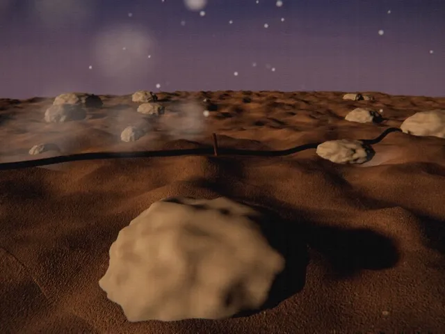
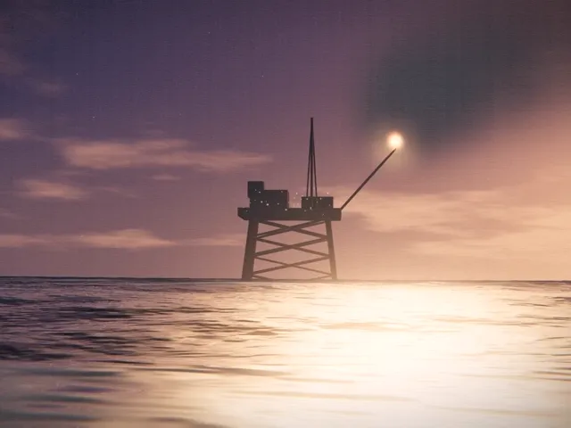
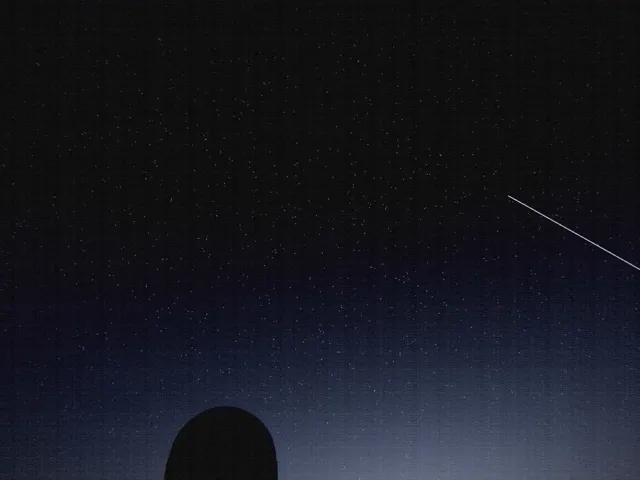
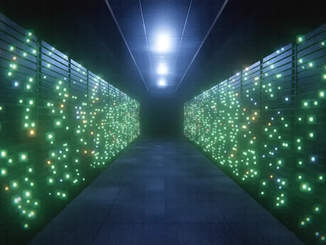
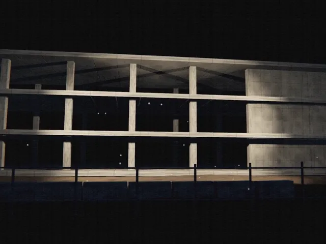

The news, up close.
Real headlines. Up close.
Tiny Headlines is a 24/7 live channel. Every story comes from a trusted outlet, credited on screen, and gets its own short, realistic 3D scene, shot up close like footage.
Leave it on while you work or study. Got a story you'd love to see up close? Suggest it on X.

Phys.org
The Guardian
Space.com
MarketWatch- NASA

The Guardian
How it works
Read. Build. Credit.
READReal news, every 10 minutes
About 40 trusted sources: Nature, BBC News, The Guardian, The Verge, New Scientist and more.
BUILDOne scene per story
Each headline becomes a short realistic 3D scene, shot up close like footage, that shows what the news is about.
CREDITAlways the source
The outlet is on screen, so you can always read the original.
AI helps us build the 3D scenes. The stories belong to the outlets that reported them.
Play along
You run the show.
From the middle of every story, vote in chat for the next one. YouTube and Twitch votes are counted together in one on-screen poll.
- !vote 1-3
- Pick the next story.
- + / -
- Keep the story on air longer, or retire it sooner.
- !source
- Get the link to the story on screen.
- !help
- All the commands.
- YouTube!vote 2
- Twitch!vote 2
- Twitch!vote 1
- YouTube!source
For digital signage
Put Tiny Headlines on your screens.
Lobbies, waiting rooms, shop windows, offices: a calm, always-fresh news loop with no talking heads.
- FreeFor digital signage partners.
- Your logo on itOptional custom branding, in exchange for a short case study.
- 16:9 and 9:16Horizontal and vertical feeds, 1080p, 24/7.
- Just a web linkPlays from a link. No app to install.